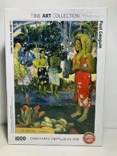

Benvenuto in casa mia
Ricomporre un quadro pezzo per pezzo è un modo diverso di guardarlo: ti costringe a fermarti su ogni dettaglio, sulle pennellate e sui colori, cose che a una prima occhiata si perdono. Per questo ho cominciato a collezionare puzzle di dipinti famosi.
Mi chiamo Carlotta e sono appassionata di arte, adoro visitare i musei e osservare da vicino i quadri più famosi. Qualche anno fa mia madre ha visitato Tahiti e mi ha portato a casa il quadro Ia Orana Maria di Paul Gauguin in versione puzzle, e da lì è cominciato tutto.
La mia collezione per ora comprende:
- Ia Orana Maria di Paul Gauguin (1891)
- La grande onda di Kanagawa di Katsushika Hokusai (circa 1830)
- Notte stellata sul Rodano di Vincent van Gogh (1888)

.jpg?width=600)